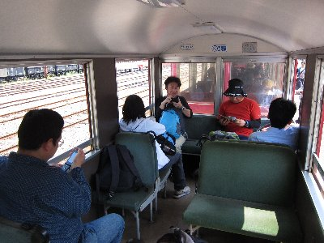
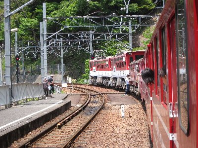
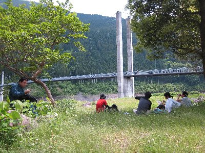
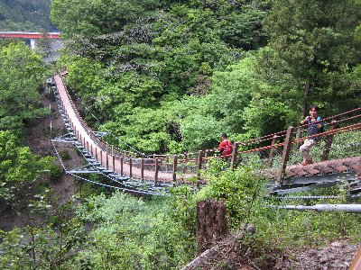

トロッコ列車とウォーキング | 2012年5月 幹事：suger |
|---|---|
静岡県中部の大井川沿いを走る大井川鉄道。SLが常時走っているって事で有名ですね。SLは金谷から千頭までですが、千頭から井川まではトロッコ列車（正式には南アルプスあぷとライン）が走っていることは知っていますか？ トロッコと言っても、炭鉱を堀りに行くような貨物的なものではなく、小さい車両って意味合いですかね。見た目は普通の車両っぽいのですが、2/3くらいの大きさです。 中部電力が井川ダムを造るために線路を引き、ダム建設後は大井川鉄道が走らせています。SLは乗ったこと有るけどトロッコ無いよと言う人もいるのではないでしょうか。私もそうでして、トロッコ乗ったことなかったんです。 また、この列車は日本でも珍しいアプト式鉄道といって、途中の急こう配を歯車を噛み合わせて進む方式を採用しています。普通二本あるレールの真ん中に、もう一本凹凸がついたレールが有りまして、歯車のついた専用車両がそのレールに噛み合わせて進むって方式です。 今回のウォーキングは、トロッコ列車に乗り、途中の駅で降りて、一駅分歩いて温泉に入り、トロッコに乗って帰ってくるというコースです。 | |
 千頭駅 トロッコ小っちゃいっしょ！ |  車内もこんな感じ |
| 鉄分（注１）が多く含まれる内容ですが、参加者6名集まりました。以外に鉄好きが多いのか？(笑) 10時半に千頭駅を出発。日曜と言うことも有り団体客もいるので混んでいますが、景色が良い座席をGet! 窓を開けて気持ちの良い風をいれ、新緑と川面とのんびり進むトロッコ。列車の音がうるさいが、それも情緒とおもえば・・・・ 実際、列車はゆっくりと、うねうねと、蛇行しながら進んでいきます。景色もいいのでほんと気持ちいい。 そしてアプトいちしろ駅。ここから一駅がアプト区間です。専用の車両が連結されます。 「連結を見たい人はどうぞ〜」と言うアナウンスと共に、人がわんさか押し寄せます。そんなに鉄分多い人たちなのか。 もともと、ここは急こう配ではなかったのですが、長島ダム（平成14年完成）を作る時にもとの線路がダム底に沈んでしまい、代わりに急こう配：アプト式が作られました。ダム湖沿いをみると元の線路が見えたりしますよ。（水位によりますが） たった一区間のアプトはあっという間に終了。これといった変わった様子はイマイチわからず。勾配はあると思うけど、普通の人はこんな感想でしょう。 | |
 長島ダム |  向こうに見える車両がアプト式の列車です |
| トロッコは接岨湖沿いを走っていきます。鉄橋を渡り、ウォーキングの出発点、奥大井湖上駅到着です。この駅は前後が鉄橋で島の様に独立しているんです。（後方の山と繋がってはいますが） なんでこの駅を作ったのか分かりませんが、周りには何もありません。湖だけです。 ここから鉄橋を渡ってウォーキング開始です。線路の横に歩ける通路があって、湖を渡り階段を登り、展望台と書いてある場所に行ってみました。展望台でお昼にしよう！ で、展望台に来てみると、あずまやは有るものの、周囲は木や草で覆われていて何も見えない！見通しが悪いせいで、鬱蒼として気持ちのいい場所ではないです。 仕方なく、ここでの昼食を諦めて、もう少し歩いてみることにしました。 ハイキング道から一般道路まで出て振り返ると、文字通り湖に浮かぶ奥大井湖上駅が見えました。 道路沿いを歩いて南アルプス接岨大吊橋まで行き、吊橋を眺めながら昼食タイムとしました。私は毎度のおにぎり。えいさんはベーグルサンドです。ベーグルサンド美味しそう♪それも良いな〜 | |
 湖上駅からこの橋を渡ります |  湖上駅 |
| ちょっと休憩してつり橋を渡り、反対側の湖畔を進みます。この道は、八橋小道と言ってウォーキング用に作ってあるのか、変わった橋などがあって楽しいです。 それほど距離は無いので、あっという間に接阻峡温泉駅に到着。まだ2時過ぎです。駅近くの露天風呂に入ります。 帰りのトロッコがちょうど出発時間だったのですが風呂優先です。しょうがないです。ただ、この列車を逃すと次の列車は2時間15分後ですが・・・・。 他に時間を潰すところもないため、湯船を出たり入ったり。なんせ2時間も暇ですからね。長湯しすぎてさすがに湯から上がり、民宿の玄関先でお茶を頂いているとき、ふと「バスって手も有ったんじゃない？」と気づき調べると、有りました！ すでに出た後ですが・・・ちょうど風呂入って1時間後位に・・・・ しかも、トロッコだと1時間ちょっと掛るところがバスだと30分・・・・まあ、後の祭りですが。 残念なバスを逃し、トロッコで帰りました。トロッコ楽しいから良いか。 今回は抜けている場面が多く、バスという移動手段を失念していたのもそうですが、自販機で当りに気付かず無効になったり、切符を買ったのに切符貰うの忘れたり、ホームで切符落としたり。 のんびりしていてよかったですけどね。こんな旅もありですよ。 注１：ここで言う鉄分とは、鉄道オタクという意味合いです。 | |
|  ランチ |  この吊り橋、階段になっていて凄い下ってる |
| 写真＆コメント：べっしー | |